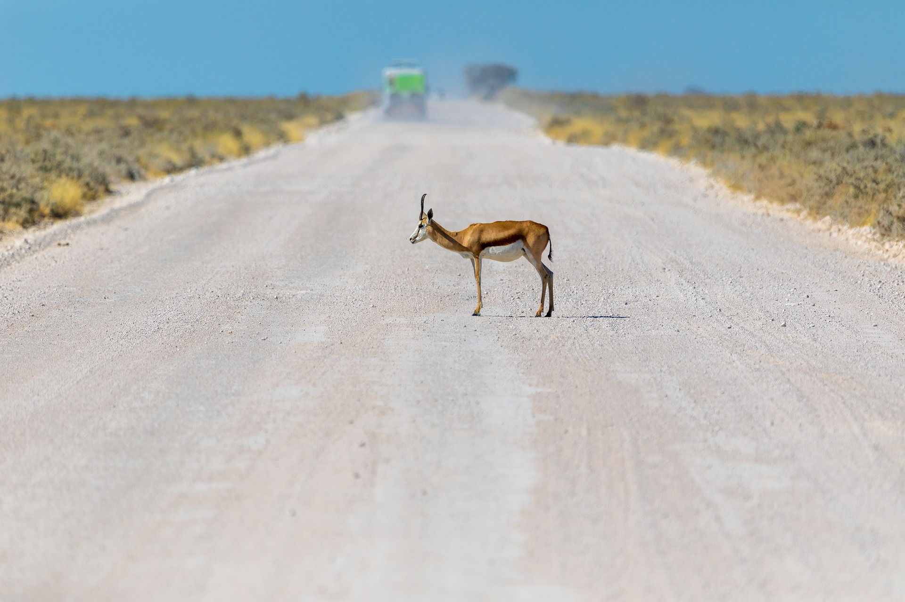

Kuh

Junge weibliche Rinder nennt man Färse. Sobald sie ihr erstes Kalb geboren haben, werden sie als Kuh bezeichnet. Sie haben ein typisches Merkmal: Das Euter mit den vier Zitzen. Im Euter wird die Milch gebildet. Männliche Rinder heißen Stier oder Bulle. Wurden sie kastriert, damit sie nicht mehr so aggressiv sind, nennt man sie Ochse. Rinder stammen vom Auerochsen ab, der seit dem Jahr 1627 ausgerottet ist. Während der Auerochse, der auch Urrind genannt wird, noch eine Schulterhöhe bis zu 180 Zentimeter hatte, werden unsere Hausrinder nur noch 125 bis 145 Zentimeter hoch. Rinder sind Säugetiere und gehören zur Familie der Hornträger. Sie sind Wiederkäuer und Paarhufer, das heißt, ihre Hufe sind in zwei Hälften geteilt. Auffällig sind ihre großen, geschwungenen Hörner, die sowohl Stiere als auch Kühe tragen. Bei manchen Rassen, die heute leben, fehlen sie jedoch. Anders als bei den Hirschen, die ihr Geweih jedes Jahr wechseln, behalten Rinder ihre Hörner ein Leben lang. Sobald die Hörner ihre endgültige Größe erreicht haben, nutzen sie sich an der Spitze nach und nach etwas ab. Sie wachsen aber an der Basis etwas weiter, so dass sie ihre ursprüngliche Größe behalten. Das Fell der Rinder kann unterschiedlich gefärbt sein: Rinder gibt es in schwarz, weiß, braun, beige und gescheckt.
Ziege

Ziegen sind eine Gattung der Säugetiere. Zu ihnen gehört die Wildziege, aus der schließlich die Hausziege gezüchtet wurde. Wer bei uns von Ziegen spricht, meint meist die Hausziegen. Zusammen mit den Hunden und den Schafen sind die Ziegen die häufigsten Haustiere der Welt. Wilde Verwandte der Hausziegen sind die Steinböcke und Gämsen in unseren Alpen. Das weibliche Tier heißt Ziege oder Geiß, das Männchen ist der Bock. Das Jungtier heißt Ziegenkitz, Ziegenlamm oder Geißlein, so im Märchen „Der Wolf und die sieben Geißlein“. In der Schweiz nennt man es Gitzi. Ziegen tragen Hörner: Bei den Weibchen sind sie kurz und nur etwas gebogen, bei den Männchen sind sie stark gebogen und können über einen Meter lang werden. Ziegen leben eher im Gebirge. Sie sind gute, sichere Bergsteiger. Sie sind sehr genügsame Tiere. Sie fressen auch sehr hartes und trockenes Futter. Sie sind damit noch genügsamer als Schafe und erst recht genügsamer als Milchkühe. Menschen haben die Ziegen deshalb schon vor mehr als 13.000 Jahren an sich gewöhnt, in der Steinzeit. Dies geschah vermutlich im Vorderen Orient. Dann haben sie die Ziegen gezüchtet, damit sie ihnen immer mehr nützten. Ziegen geben nicht nur Fleisch, sondern täglich Milch. Das Leder der Ziegen ist ebenfalls sehr beliebt. Noch heute kaufen viele Touristen Jacken oder Gürtel aus Ziegenleder, wenn sie in orientalischen Ländern Urlaub machen. Ziegen sind Säugetiere. Sie werden etwa mit dem ersten Lebensjahr geschlechtsreif, sie können sich dann also paaren und Junge machen. Die Tragzeit beträgt etwa fünf Monate. Meistens kommen Zwillinge zur Welt. Die Geiß säugt ihre Zicklein etwa zehn Monate lang. Erwachsene Tiere sind Wiederkäuer Sie schlucken ihre Nahrung in einen Vormagen, würgen sie dann wieder herauf und kauen sie richtig durch. Dann schlucken sie die Nahrung in den richtigen Magen hinunter.
Nashorn

Die Nashörner (Rhinocerotidae) oder auch Rhinozerosse bilden eine Familie der Unpaarhufer (Perissodactyla) mit heute noch fünf lebenden Arten. Sie sind charakterisiert durch einen kräftigen Körper und kurze Gliedmaßen mit drei Zehen sowie einen großen Kopf, der bei allen heute lebenden Vertretern eine markante Bildung, bestehend aus einem oder zwei – für die Familie namensgebenden – Hörnern, trägt. Die Familie stellt eine der vielfältigsten und erfolgreichsten in der Geschichte der Säugetiere dar und war während ihrer vor nahezu 50 Millionen Jahren beginnenden Entwicklungsgeschichte über weite Teile Eurasiens, Afrikas und Nordamerikas verbreitet. Ihr Niedergang begann Ende des Miozäns vor rund 6 bis 5 Millionen Jahren in Verbindung mit klimatischen und damit einhergehenden Landschaftsveränderungen, die zum Aussterben der nordamerikanischen sowie zahlreicher weiterer Nashornvertreter im ursprünglichen Verbreitungsgebiet führten. Gegen Ende des Pleistozäns gab es eine erneute Aussterbephase, während der alle nordeurasischen Vertreter verschwanden. Überlebt haben die heute noch bestehenden Nashornarten Breitmaul- und Spitzmaulnashorn in Afrika südlich der Sahara sowie Panzer-, Java- und Sumatra-Nashorn im süd- bis südöstlichen Asien, die teilweise in ihrem Bestand durch Vernichtung ihres Lebensraumes und Wilderei abermals stark geschrumpft sind.
Steinbock

Steinböcke gehören zur Gattung der Ziegen und ähneln ihnen auch ein bisschen. Sie sind etwa genau so groß und messen vom Kopf bis zum Po einen bis 1,5 Meter und sind 70 Zentimeter bis einen Meter hoch. Die Weibchen - sie werden auch Steingeiß genannt - wiegen etwa 50 Kilogramm, die Männchen 80 bis 125 Kilogramm. Steinbock-Männchen tragen außerdem wie die Ziegen einen kurzen Kinnbart. Während die Weibchen nur kurze, etwa 20 Zentimeter lange Hörner besitzen, sind die der Männchen bis zu einem Meter lang, bis zu 15 Kilogramm schwer und leicht nach hinten gebogen. Auf der Vorderseite haben die Hörner dicke Wülste. Im Querschnitt sind die Hörner der Weibchen rund, die der Böcke dreieckig. Der Schwanz der Tiere ist ziemlich kurz, er misst nur 15 Zentimeter. Die Hinterbeine der Tiere sind länger als die Vorderbeine, so dass sie an steilen Hängen sicher gehen können. Alpensteinböcke sind an ein Leben im kalten und rauen Hochgebirge angepasst: Ihr Fell ist deshalb sehr dicht. Im Sommer sind Weibchen und Jungtiere graubraun, die Männchen kastanienbraun gefärbt, im Winter ist das Fell aller Tiere grau bis dunkelgrau. Der Bauch ist heller gefärbt, manchmal sogar fast weiß.
Gazelle
Gazellen gehören zur Ordnung der Paarhufer und dort - wie die Kühe - zur Unterordnung der Wiederkäuer. Sie bilden die Unterfamilie der Gazellen, zu der etwa 16 verschieden Arten gehören. Alle Gazellen haben einen zierlichen, stromlinienförmigen Körper und schlanke, lange Beine. Je nach Art sind Gazellen so groß wie ein Reh oder ein Damhirsch. Sie messen von der Schnauze bis zum Po 85 bis 170 Zentimeter, haben eine Schulterhöhe von 50 bis 110 Zentimeter und wiegen zwischen 12 und 85 Kilogramm. Der Schwanz ist 15 bis 30 Zentimeter lang. Meist besitzen sowohl die Männchen als auch die Weibchen 25 bis 35 Zentimeter lange Hörner. Bei den Weibchen sind sie allerdings meist etwas kürzer. Die Hörner haben bei allen Antilopen Querringe, aber die Form der Hörner ist bei den einzelnen Arten unterschiedlich. Bei manchen Gazellen sind die Hörner fast gerade, bei anderen s-förmig geschwungen. Das Fell der Gazellen ist braun oder gelblich-grau, auf dem Rücken ist es dunkler, auf der Bauchseite weiß. Bei vielen Gazellenarten zieht sich an den Körperseiten ein schwarzer Streifen entlang. Dank dieser Färbung und dem schwarzen Streifen sind Gazellen in der flirrenden Hitze in den Savannen und Steppen kaum zu sehen. Die häufigste und bekannteste Gazelle ist die Thomson-Gazelle. Sie ist bis zur Schulter gerade einmal 65 Zentimeter hoch und wiegt nur 28 Kilogramm. Ihr Fell ist bräunlich und weiß gefärbt und sie trägt den typischen schwarzen Querstreifen an der Seite.